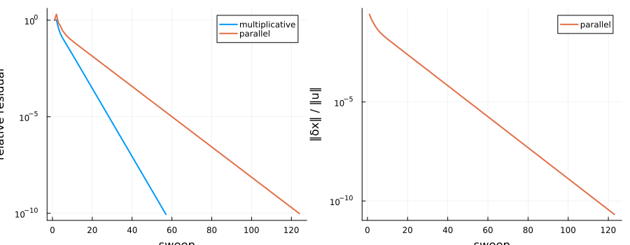
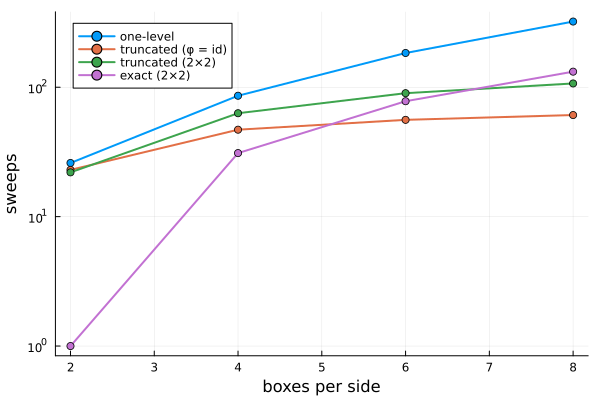
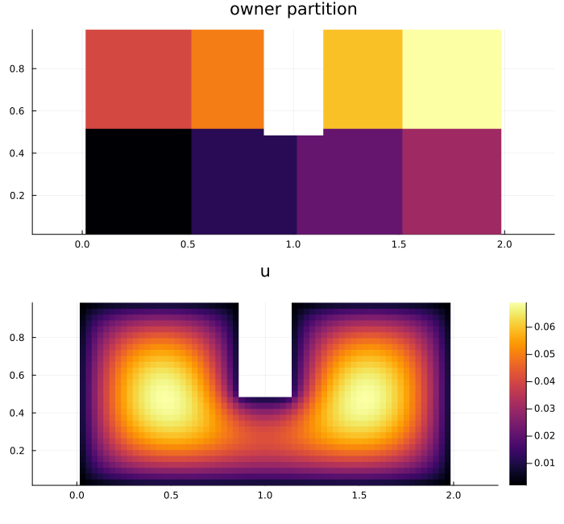
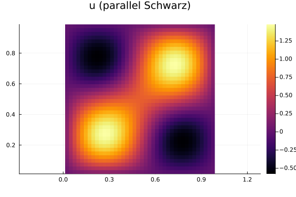

Schwarz Domain Decomposition on a Cellular Sheaf
Overlapping Schwarz methods solve a PDE on a large domain by repeatedly solving it on smaller, overlapping subdomains, each using its neighbours' current values as boundary data. This example sets the method up on a cellular sheaf:
- the vertices are the subdomains $\Omega_i$, each with stalk $\mathbb{R}^{\Omega_i}$ (the unknowns it owns a copy of);
- the edges are the nonempty overlaps $\Omega_i \cap \Omega_j$, with stalk $\mathbb{R}^{\Omega_i \cap \Omega_j}$;
- the restriction maps read off a subdomain's values on an overlap.
A Schwarz iterate is a 0-cochain of this sheaf. The coboundary $\delta x$ measures how much overlapping subdomains disagree, and a converged iterate is a global section that glues into the solution.
using CellularSheaves
using LinearAlgebra
using Graphs
using PlotsThe PDE
We solve the Poisson problem $-\Delta u = f$ on the unit square with $u = 0$ on the boundary, using the 5-point finite-difference Laplacian on an $m \times m$ interior grid. The model problems in SchwarzModelProblems provide the grid (unit_square), the matrix (poisson_matrix) and box partitions (box_partition).
m = 40
dom = unit_square(m)
A = poisson_matrix(dom)
f = [8π^2 * sin(2π * x) * sin(2π * y) + 10 for (x, y) in dom.points]
u_exact = A \ f;The decomposition
We cut the grid into a $3 \times 3$ array of boxes and grow each box by two layers of grid neighbours to get overlapping subdomains.
parts = box_partition(dom, 3, 3)
subdomains = overlapping_subdomains(A, parts; overlap=2)
dd = SchwarzDecomposition(A, subdomains; owner=parts)SchwarzDecomposition(9 subdomains, 1600 dofs, 20 overlaps)Each vertex stalk is a closed subdomain $\overline\Omega_i$: the subdomain's own unknowns plus a ghost layer $\Gamma_i$ of boundary values it receives from its neighbours. The edges are the nonempty overlaps $\overline\Omega_i \cap \overline\Omega_j$, and every ghost value lies in the edge stalk shared with the subdomain that computes it. So every message a Schwarz method sends is a restriction map applied to a vertex stalk. The restriction maps are coordinate selections, stored as index lists (SelectionRestriction) rather than matrices.
s = overlap_sheaf(dd)
(nv(underlying_graph(s)), ne(underlying_graph(s)), typeof(get_restriction_map(s, 1, 2)))(9, 20, SelectionRestriction{Float64})Global sections of this sheaf are exactly the functions on the whole grid: a cochain is a section precisely when all overlapping copies agree.
overlap_disagreement(dd, localize(dd, u_exact))0.0Solving
The multiplicative (alternating) method visits subdomains one at a time and pushes each new local solution through the restriction maps onto its neighbours, so the iterate stays a global section. The parallel (Lions) method solves every subdomain at once from the previous cochain. Its copies disagree on overlaps until convergence.
A SchwarzProblem bundles the decomposition with the right-hand side, and an algorithm struct bundles the solver options. solve runs one on the other.
prob = SchwarzProblem(dd, f)
mult = solve(prob, SchwarzIteration(sweep=MultiplicativeSweep(), tol=1e-10))
par = solve(prob, SchwarzIteration(sweep=ParallelSweep(), tol=1e-10))
(mult.iterations, par.iterations)(56, 123)norm(mult.u - u_exact) / norm(u_exact), norm(par.u - u_exact) / norm(u_exact)(9.535894301237885e-11, 1.3997594723699343e-10)The residual of the glued iterate, and the disagreement $\|\delta x\|$ on the overlaps, for both methods:
p1 = plot(mult.residuals; yscale=:log10, label="multiplicative", xlabel="sweep",
ylabel="relative residual", lw=2)
plot!(p1, par.residuals; label="parallel", lw=2)
p2 = plot(par.disagreements[2:end] ./ norm(u_exact); yscale=:log10, label="parallel",
xlabel="sweep", ylabel="‖δx‖ / ‖u‖", lw=2, color=2)
plot(p1, p2; layout=(1, 2), size=(900, 350))
More overlap, fewer sweeps
The convergence rate of one-level Schwarz improves with the overlap width $\delta$ (roughly like $1 - C\delta/H$ for subdomain size $H$).
for δ in 1:4
dδ = SchwarzDecomposition(A, overlapping_subdomains(A, parts; overlap=δ); owner=parts)
println("overlap = $δ: ", solve(SchwarzProblem(dδ, f), SchwarzIteration(sweep=ParallelSweep())).iterations, " sweeps")
endoverlap = 1: 163 sweeps
overlap = 2: 98 sweeps
overlap = 3: 70 sweeps
overlap = 4: 55 sweeps
Multicolor sweeps
Two subdomains conflict when they overlap or are coupled by $A$. Subdomains of one color are independent, so a multiplicative sweep can solve a whole color class concurrently. The result is identical to a sequential sweep in color order. For the $3 \times 3$ boxes four colors suffice, so a sweep takes four parallel steps instead of nine sequential ones.
dd.colors4-element Vector{Vector{Int64}}:
[5]
[2, 8]
[4, 6]
[1, 3, 7, 9]multicolor = solve(prob, SchwarzIteration(sweep=MulticolorSweep(), tol=1e-10))
multicolor.iterations56Coarse spaces from the pushforward
One-level methods only exchange information between neighbouring subdomains, so the iteration count grows with the number of subdomains. A coarse level fixes this. Both coarse spaces here start from a graph homomorphism $\varphi : G \to H$ that groups subdomains into aggregates, and from the pushforward $\varphi_* F$ of the overlap sheaf. Its stalk at an aggregate is the space of functions on the union of the subdomains in the fiber.
- The truncated pushforward keeps one mode per aggregate: the constant function, weighted by a partition of unity (with $\varphi$ the identity this is the Nicolaides coarse space). The coarse problem has one unknown per aggregate.
- The exact pushforward keeps the whole stalk. The coarse step is a Schwarz sweep over the aggregates themselves.
We group the boxes $2 \times 2$ into aggregates.
function box_aggregation(p)
q = cld(p, 2)
return GraphHomomorphism([(cld(by, 2) - 1) * q + cld(bx, 2) for by in 1:p for bx in 1:p])
endbox_aggregation (generic function with 1 method)The exact coarse space has the same stalks as pushforward_sheaf:
hom = box_aggregation(4)
small_dom = unit_square(16)
A16 = poisson_matrix(small_dom)
parts16 = box_partition(small_dom, 4, 4)
small = SchwarzDecomposition(A16, overlapping_subdomains(A16, parts16; overlap=1); owner=parts16)
exact_small = ExactPushforwardCoarseSpace(small, hom)
vertex_stalks(pushforward_sheaf(hom, overlap_sheaf(small))) == length.(exact_small.decomposition.cover.subdomains)falseScalability
We keep each box at $8 \times 8$ grid points and add more boxes, so the grid grows with the number of subdomains. We compare sweeps to a relative residual of $10^{-8}$ for the one-level method and for each coarse space, with their coarse dimensions (the number of unknowns the coarse level solves for).
function scaling_row(p)
mp = 8p
domp = unit_square(mp)
Ap = poisson_matrix(domp)
pp = box_partition(domp, p, p)
ddp = SchwarzDecomposition(Ap, overlapping_subdomains(Ap, pp; overlap=1); owner=pp)
fp = ones(mp^2)
coarse_spaces = (
"one-level" => nothing,
"truncated (φ = id)" => TruncatedPushforwardCoarseSpace(ddp),
"truncated (2×2)" => TruncatedPushforwardCoarseSpace(ddp, box_aggregation(p)),
"exact (2×2)" => ExactPushforwardCoarseSpace(ddp, box_aggregation(p)),
)
return map(coarse_spaces) do (name, c)
its = solve(SchwarzProblem(ddp, fp), SchwarzIteration(sweep=MulticolorSweep(), coarse=c, maxiter=5000)).iterations
dim = c === nothing ? 0 : coarse_dimension(c)
(; p, name, its, dim)
end
end
rows = reduce(vcat, [collect(scaling_row(p)) for p in (2, 4, 6, 8)])
println(rpad("boxes", 8), rpad("method", 22), rpad("sweeps", 8), "coarse dim")
for r in rows
println(rpad("$(r.p)×$(r.p)", 8), rpad(r.name, 22), rpad(r.its, 8), r.dim)
endboxes method sweeps coarse dim
2×2 one-level 26 0
2×2 truncated (φ = id) 23 4
2×2 truncated (2×2) 22 1
2×2 exact (2×2) 1 256
4×4 one-level 86 0
4×4 truncated (φ = id) 47 16
4×4 truncated (2×2) 63 4
4×4 exact (2×2) 31 1152
6×6 one-level 184 0
6×6 truncated (φ = id) 56 36
6×6 truncated (2×2) 90 9
6×6 exact (2×2) 78 2688
8×8 one-level 322 0
8×8 truncated (φ = id) 61 64
8×8 truncated (2×2) 107 16
8×8 exact (2×2) 132 4864
With the truncated coarse space and $\varphi$ the identity, the sweep count levels off as boxes are added (23, 47, 56, 61 sweeps), while the one-level count grows roughly with the number of boxes. Its coarse problem has one unknown per subdomain. Coarser aggregates ($2 \times 2$) make the coarse problem four times smaller but less effective.
The exact pushforward is the most accurate per sweep while there are few aggregates. With one aggregate it is a direct solve and converges in one sweep; on $4 \times 4$ boxes it beats every truncated variant. But it carries no global information beyond its aggregates, so it is still a one-level method on larger subdomains. Its sweep count grows with the number of aggregates, overtaking the truncated space by $6 \times 6$ boxes, and its coarse level costs as much as the whole problem plus overlaps. Higher accuracy per sweep, worse scalability.
ps = (2, 4, 6, 8)
plt = plot(; xlabel="boxes per side", ylabel="sweeps", yscale=:log10, legend=:topleft)
for name in unique(r.name for r in rows)
plot!(plt, collect(ps), [r.its for r in rows if r.name == name]; label=name, marker=:circle, lw=2)
end
plt
Robin transmission conditions
Classical Schwarz passes Dirichlet data across each edge of the overlap graph. Optimized Schwarz methods pass Robin data $(\partial_n + p)\,u$ instead, which damps low frequencies along the interface far better. Here this is done algebraically: on each interface face, the Dirichlet coupling is replaced by a Neumann condition plus the Robin parameter $p$. The exact solution stays the fixed point.
Gander's optimized parameter for overlap width $L$ is a continuous quantity. For our $h^{-2}$-scaled matrix we divide it by $h$. With overlap $\delta$ grid layers on each side, the overlap width is $L = (2\delta+1)h$.
First on four vertical strips, where subdomain boundaries never meet:
h = dom.h
strips = box_partition(dom, 4, 1)
strip_domains = overlapping_subdomains(A, strips; overlap=1)
pstar = optimized_robin_parameter(3h) / h
for scale in (nothing, 0.125, 0.5, 1, 2, 8)
transmission = scale === nothing ? DirichletTransmission() : RobinTransmission(scale * pstar)
dds = SchwarzDecomposition(A, strip_domains; owner=strips, transmission)
r = solve(SchwarzProblem(dds, f), SchwarzIteration(sweep=ParallelSweep(), maxiter=3000))
println(rpad(scale === nothing ? "Dirichlet" : "p = $(scale) p*", 14), r.iterations, " sweeps")
endDirichlet 110 sweeps
p = 0.125 p* 71 sweeps
p = 0.5 p* 30 sweeps
p = 1 p* 17 sweeps
p = 2 p* 30 sweeps
p = 8 p* 94 sweeps
The optimized parameter cuts the sweep count by an order of magnitude, and the formula's $p^*$ is close to the best value.
Cross points
On boxes, four subdomains meet at each cross point. Discrete optimized Schwarz methods are delicate there (Gander–Kwok), and a naive algebraic version diverges for small $p$. RobinTransmission treats corners consistently:
- an interface dof at a subdomain corner gets one Robin term per face, each with the parameter of the neighbour across that face;
- each face's Robin data is read from the neighbour across it;
- the alternating sweeps do not push values onto the neighbours, so every subdomain keeps its own copy on the overlaps.
With these, every sweep converges for every $p$ on a $4 \times 4$ box grid with nine cross points:
boxes = box_partition(dom, 4, 4)
box_domains = overlapping_subdomains(A, boxes; overlap=1)
dirichlet = SchwarzDecomposition(A, box_domains; owner=boxes)
println(rpad("Dirichlet", 14), [solve(SchwarzProblem(dirichlet, f), SchwarzIteration(; sweep, maxiter=3000)).iterations
for sweep in (ParallelSweep(), MulticolorSweep())])
for scale in (0.125, 0.5, 1, 2, 4)
ddr = SchwarzDecomposition(A, box_domains; owner=boxes, transmission=RobinTransmission(scale * pstar))
its = map((ParallelSweep(), MulticolorSweep())) do sweep
r = solve(SchwarzProblem(ddr, f), SchwarzIteration(; sweep, maxiter=3000))
r.converged ? r.iterations : "diverged"
end
println(rpad("p = $(scale) p*", 14), its)
endDirichlet [215, 100]
p = 0.125 p* (288, 158)
p = 0.5 p* (84, 48)
p = 1 p* (44, 27)
p = 2 p* (56, 31)
p = 4 p* (104, 57)
(Columns: parallel and multicolor sweeps.)
The notched rectangle
The notched_rectangle is $[0, 2] \times [0, 1]$ with a slot cut from the middle of the top edge. The bottom of the slot has two re-entrant corners, where the solution behaves like $r^{2/3}$. It is the standard test of how a method copes with corner singularities. The algebraic decomposition needs no special handling: subdomains next to the slot simply have an irregular shape.
notched = notched_rectangle(31)
An = poisson_matrix(notched)
fn = ones(length(notched.points))
parts_n = box_partition(notched, 4, 2)
ddn = SchwarzDecomposition(An, overlapping_subdomains(An, parts_n; overlap=2); owner=parts_n)
pn = optimized_robin_parameter(5notched.h) / notched.h
ddn_robin = SchwarzDecomposition(An, overlapping_subdomains(An, parts_n; overlap=2); owner=parts_n,
transmission=RobinTransmission(pn))
probn = SchwarzProblem(ddn, fn)
for (name, prob_, alg) in (
("Dirichlet, multicolor", probn, SchwarzIteration(sweep=MulticolorSweep())),
("Dirichlet, two-level", probn, SchwarzIteration(sweep=MulticolorSweep(), coarse=TruncatedPushforwardCoarseSpace(ddn))),
("Robin p*, multicolor", SchwarzProblem(ddn_robin, fn), SchwarzIteration(sweep=MulticolorSweep())),
("two-level CG", probn, SchwarzCG(coarse=TruncatedPushforwardCoarseSpace(ddn))))
r = solve(prob_, alg)
println(rpad(name, 24), r.iterations, " iterations, error ", round(norm(r.u - An \ fn) / norm(An \ fn); sigdigits=2))
endDirichlet, multicolor 28 iterations, error 3.1e-9
Dirichlet, two-level 26 iterations, error 2.6e-9
Robin p*, multicolor 12 iterations, error 1.9e-10
two-level CG 25 iterations, error 2.2e-10
xn = notched.h .* (1:size(notched.inside, 1))
yn = notched.h .* (1:size(notched.inside, 2))
un = solve(probn, SchwarzIteration(sweep=MulticolorSweep(), tol=1e-10)).u
plot(heatmap(xn, yn, grid_values(notched, Float64.(parts_n))'; aspect_ratio=1, title="owner partition", colorbar=false),
heatmap(xn, yn, grid_values(notched, un)'; aspect_ratio=1, title="u"); layout=(2, 1), size=(700, 650))
Sheaf ADMM and Robin conditions
Hanks, Riess et al. (arXiv:2504.02049) solve homological programs $\min \sum_i f_i(x_i)$ subject to $x \in H^0$ by ADMM with copies $z$ and multipliers $y$ on the vertex stalks:
\[x_i \leftarrow \operatorname{argmin} f_i(x_i) + \tfrac{\rho}{2}\lVert x_i - z_i + y_i\rVert^2, \qquad z \leftarrow \Pi_{H^0}(x + y), \qquad y \leftarrow y + x - z .\]
The PDE is such a program: local_objectives splits the energy $\tfrac12 u^\mathsf{T} A u - f^\mathsf{T} u$ exactly into convex pieces on the closed subdomains, and SheafADMM runs the iteration. Its local solve $(K_i + \rho I)\, x_i = b_i + \rho (z_i - y_i)$ has the same shape as a Robin local solve, a "Neumann" local operator plus a penalty, so we compare the penalty $\rho$ with the Robin parameter $p$.
strip_problem = SchwarzProblem(SchwarzDecomposition(A, strip_domains; owner=strips), f)
box_problem = SchwarzProblem(dirichlet, f)
for (name, problem, robin_domains, robin_parts) in (("strips", strip_problem, strip_domains, strips),
("4×4 boxes", box_problem, box_domains, boxes))
robin = SchwarzDecomposition(A, robin_domains; owner=robin_parts, transmission=RobinTransmission(pstar))
r = solve(SchwarzProblem(robin, f), SchwarzIteration(sweep=ParallelSweep(), maxiter=3000))
admm = [solve(problem, SheafADMM(rho=scale * pstar, maxiter=3000)).iterations for scale in (0.3, 1, 3)]
println(rpad(name, 11), "Robin p*: ", r.iterations, " ADMM ρ = (0.3, 1, 3) p*: ", admm)
endstrips Robin p*: 17 ADMM ρ = (0.3, 1, 3) p*: [865, 273, 607]
4×4 boxes Robin p*: 44 ADMM ρ = (0.3, 1, 3) p*: [1464, 452, 796]
Both parameters are best at the same scale: ADMM's best $\rho$ is close to the optimized Robin parameter $p^*$. But optimized Schwarz needs far fewer iterations. The local solves differ in what they know:
- A Robin subdomain keeps the full operator on its interior and reads its neighbours' current values and fluxes on the interface.
- An ADMM subdomain holds only its share of the energy on the dofs it shares with others. It sees its neighbours only through the averages $z$, and must learn the interface flux through the multiplier $y$.
ADMM has the stronger guarantees: it converges for every $\rho > 0$ (Boyd et al. 2011) and works without overlap. It needs an exact projection, though. Replacing $\Pi_{H^0}$ by a single sheaf-diffusion step (projection_steps = 1) converged on strips but diverged on a box grid in our tests (32 × 32 grid, penalty = :shared), where dofs have different numbers of copies.
Krylov acceleration
The additive Schwarz operator $\sum_i R_i^\mathsf{T} A_i^{-1} R_i$ is symmetric positive definite, so it can precondition conjugate gradients. Adding the truncated pushforward coarse space gives the classical two-level preconditioner. Its iteration count stays bounded as subdomains are added, while one-level CG grows.
for p in (4, 8, 16)
domp = unit_square(8p)
Ap = poisson_matrix(domp)
pp = box_partition(domp, p, p)
ddp = SchwarzDecomposition(Ap, overlapping_subdomains(Ap, pp; overlap=1); owner=pp)
probp = SchwarzProblem(ddp, ones(size(Ap, 1)))
one_level = solve(probp, SchwarzCG()).iterations
two_level = solve(probp, SchwarzCG(coarse=TruncatedPushforwardCoarseSpace(ddp))).iterations
println("$(p)×$(p) boxes: one-level CG $one_level, two-level CG $two_level")
end4×4 boxes: one-level CG 20, two-level CG 22
8×8 boxes: one-level CG 34, two-level CG 33
16×16 boxes: one-level CG 58, two-level CG 42
The solution on the unit square
xs = dom.h .* (1:m)
heatmap(xs, xs, grid_values(dom, par.u)'; aspect_ratio=1, title="u (parallel Schwarz)")